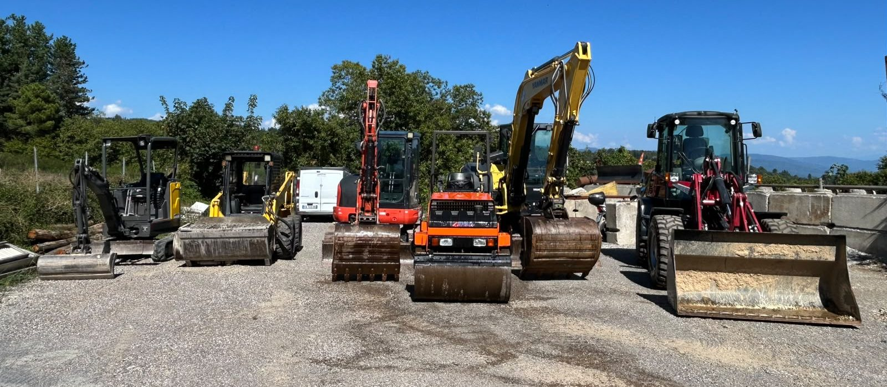
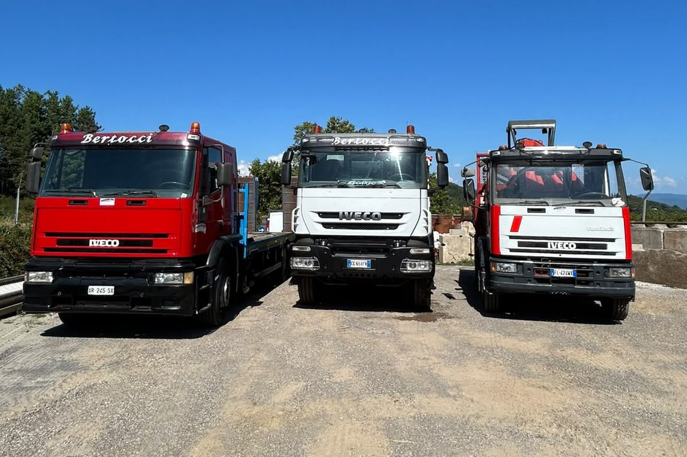
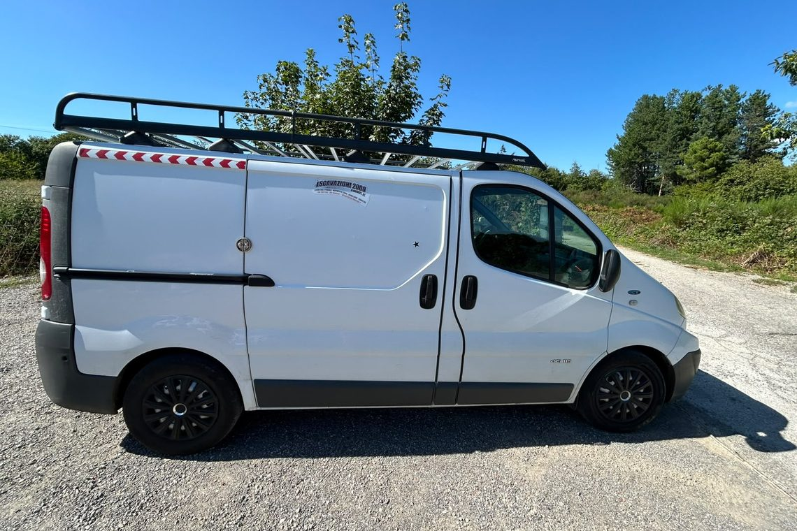
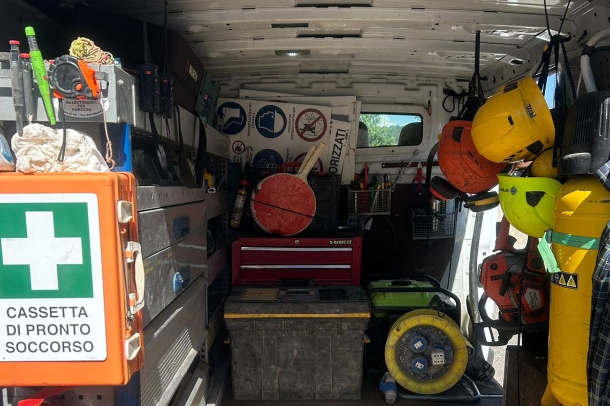
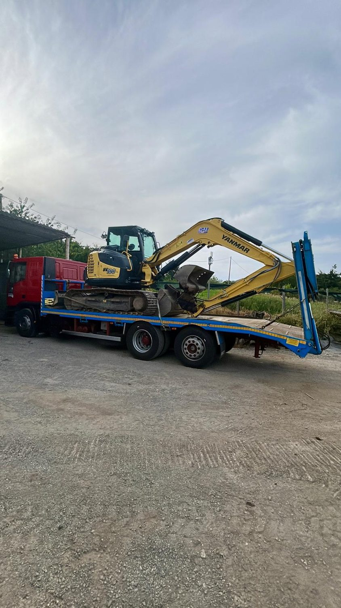
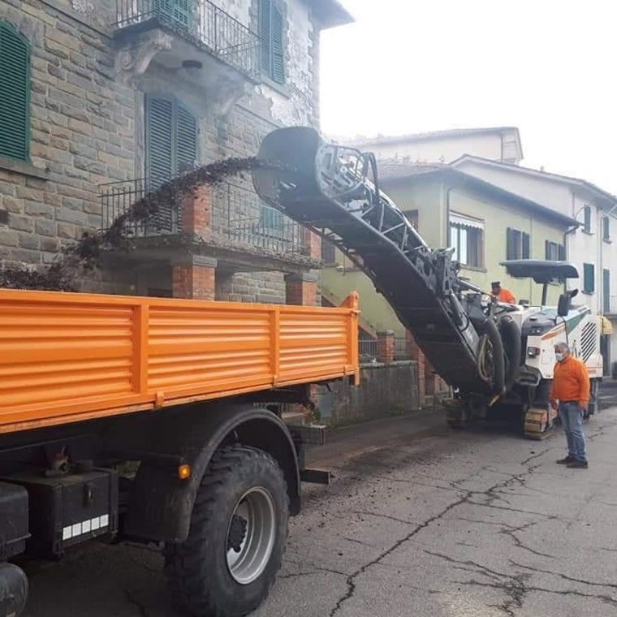
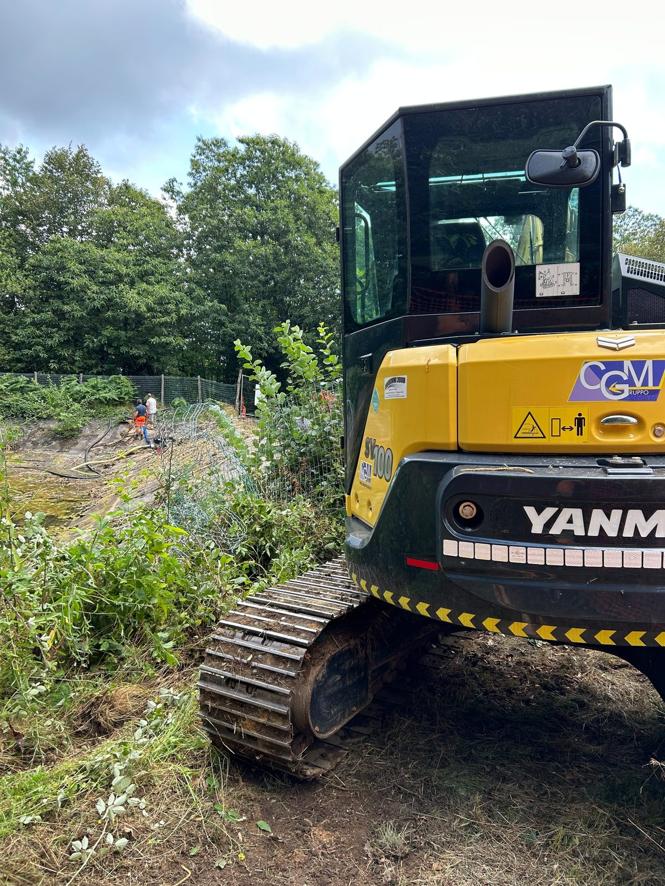

È la differenza fra un'impresa e un intermediario: possiamo garantire tempi e qualità perché non dipendiamo da nessuno.
Tre escavatori cingolati, due pale gommate, un rullo e cinque automezzi, tutti di proprietà. Taglie diverse per poter lavorare sia sui grandi piazzali sia dove lo spazio è ridotto: dentro un capannone, su un versante boscato, dentro un alveo. Il pianale con rampe idrauliche ci porta i mezzi da soli, e l'officina mobile ci tiene il cantiere aperto anche quando si rompe qualcosa.

Dal mini da cantiere stretto al cingolato da 100 quintali.
Movimentazione, impasto in cantiere e rullatura.
Trasportiamo materiali e mezzi per conto nostro: niente attese di terzi.
Il guasto in cantiere si ripara sul posto, non si aspetta il carro attrezzi.
Martelli demolitori da 100 e da 250 kg, benne oscillanti, trince forestali, pinza per tronchi, pinza selezionatrice, benne impastatrici da 300 e 600 litri, forche per pallet, impianto di pesa a bordo, gru e rampe idrauliche per il carico.
Tutti i mezzi sono sottoposti a manutenzione e verifiche periodiche secondo le normative vigenti.
Trasportiamo mezzi e materiali per conto nostro, e il guasto in cantiere lo ripariamo sul posto.










Ce lo chieda: se non ce l'abbiamo glielo diciamo, invece di farle perdere tempo.